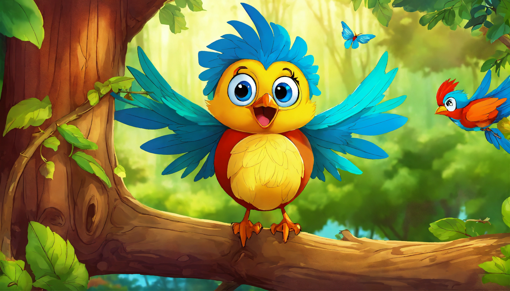
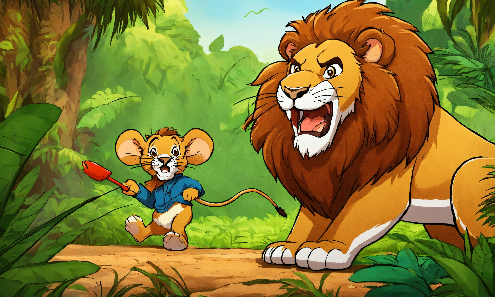
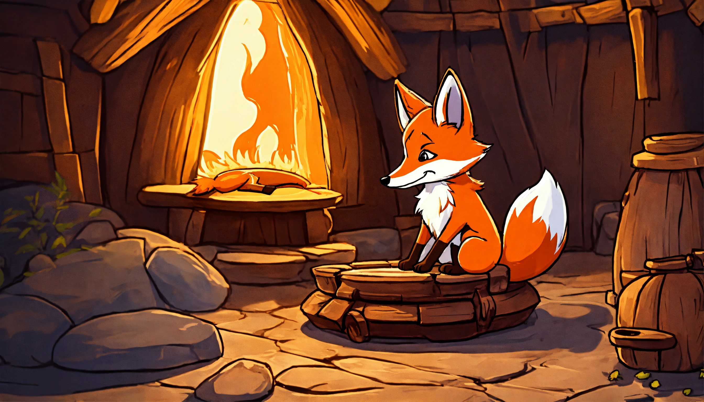
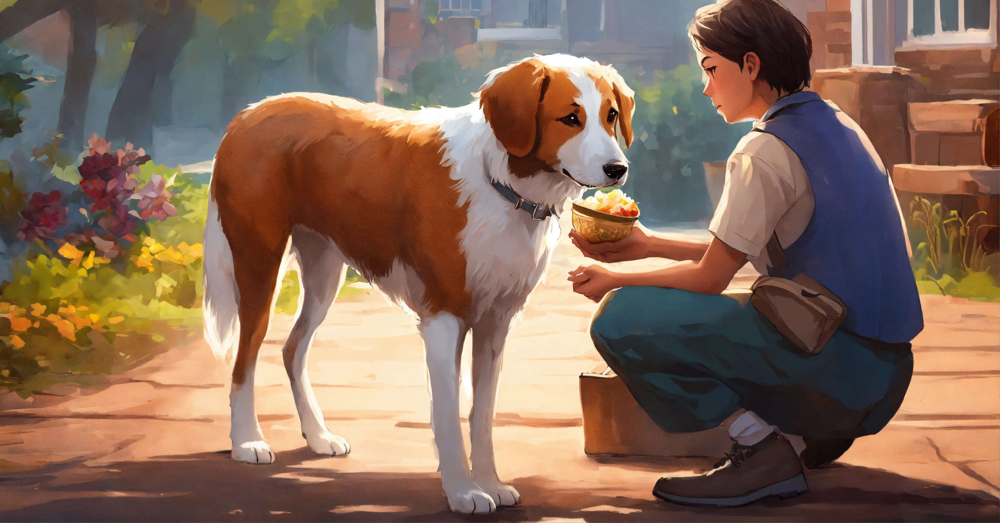
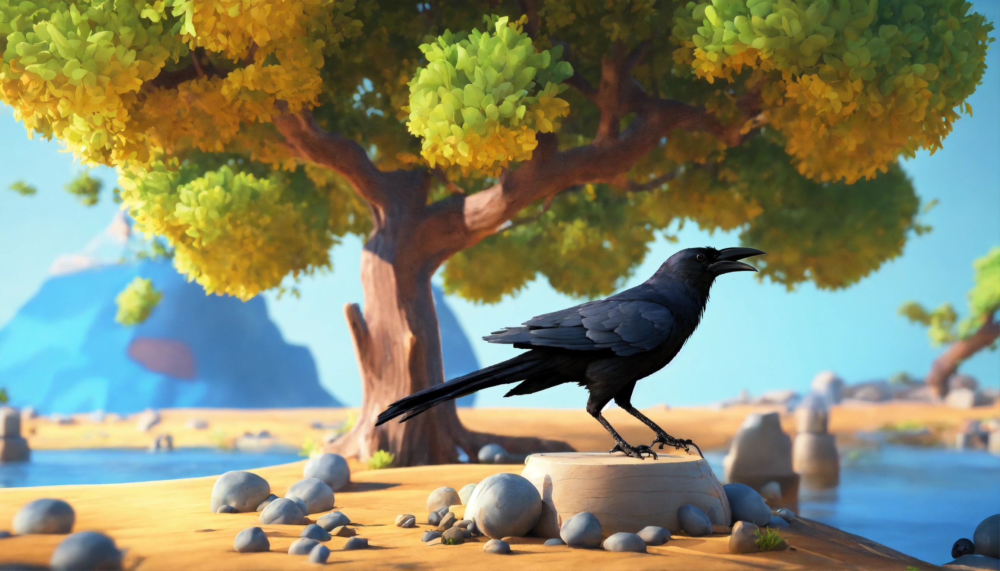
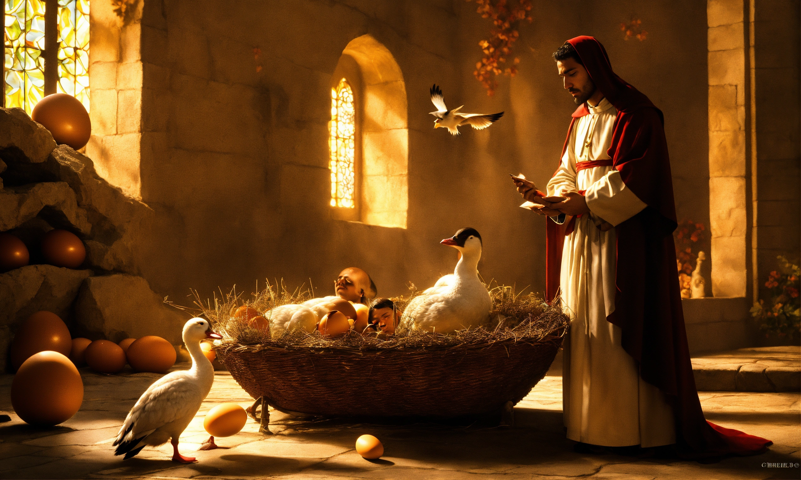
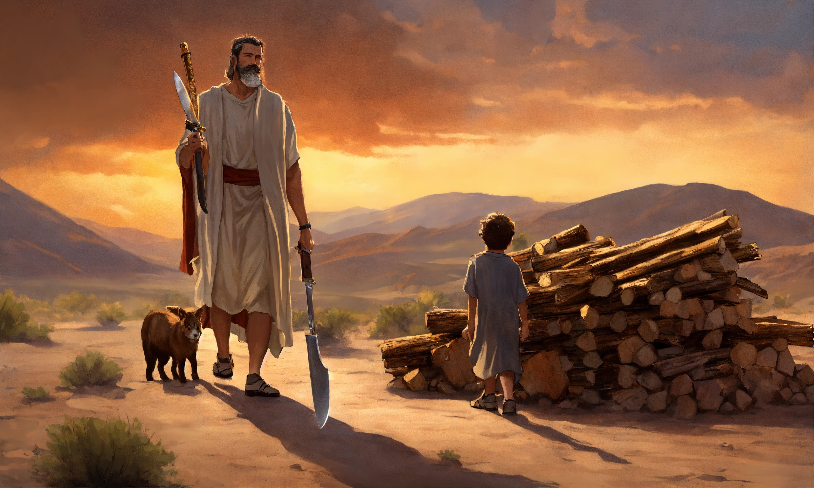
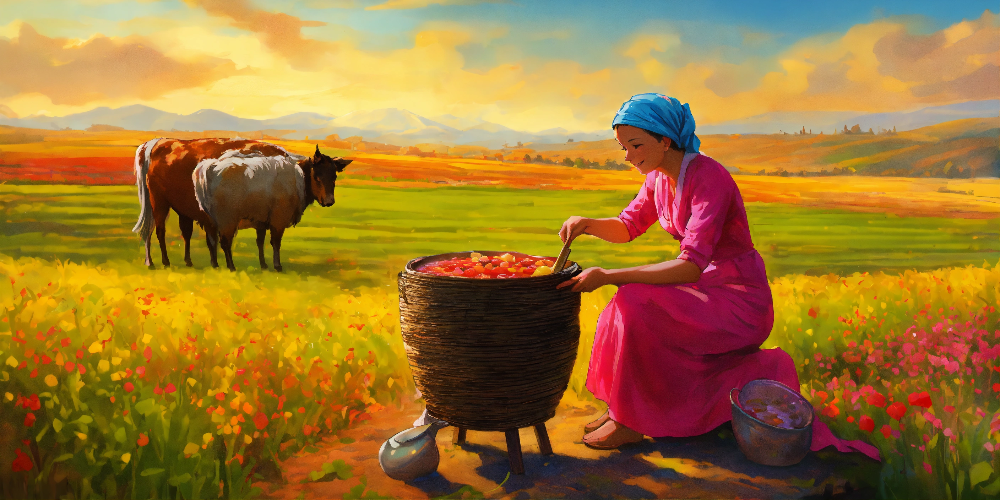

Stories
The Brave Little Bird

Once upon a time, there lived a tiny bird in a peaceful forest. Every morning, she sang beautiful songs that filled the forest with happiness and joy. All the animals loved listening to her sweet voice because it brought peace and comfort to everyone. One day, a terrible storm hit the forest with strong winds and heavy rain. Many trees fell, nests were destroyed, and the animals became frightened. Although the little bird also lost her own nest, she remained brave and encouraged everyone to stay calm and help one another. The squirrels gathered food, the rabbits found safe places for the younger animals, and the birds worked together to rebuild the damaged nests. After the storm passed, the forest slowly returned to normal. The animals thanked the little bird for her courage, kindness, and positive attitude, realizing that even the smallest creature can make a big difference. From that day on, the little bird became a symbol of hope and unity, inspiring everyone to face every challenge with confidence and a helping heart.
Moral
Never lose hope in difficult situations.
The Honest Woodcutter

Once upon a time, there was a poor but hardworking woodcutter who earned his living by cutting trees in the forest. One day, while chopping wood near a river, his axe accidentally slipped from his hands and fell into the deep water. The woodcutter became very sad because it was his only tool for earning money. Suddenly, a kind fairy appeared from the river holding a beautiful golden axe and asked if it belonged to him. The honest woodcutter replied that the golden axe was not his. The fairy then returned with a shiny silver axe, but once again he truthfully said it was not his. Finally, she brought out his old iron axe, and the woodcutter happily recognized it as his own. Impressed by his honesty, the fairy rewarded him with all three axes—the golden, silver, and iron ones. The woodcutter thanked the fairy with a grateful heart and returned home happily, proving that honesty always brings great rewards.
Moral
Honesty is the best policy.
The Lion and the Mouse

One day, a mighty lion was sleeping peacefully under a large tree in the forest. A tiny mouse accidentally ran across the lion's body and woke him up. Angry at being disturbed, the lion caught the little mouse in his huge paw. The frightened mouse begged for mercy and promised that one day he would return the favor. The lion laughed at the idea that such a small creature could ever help him, but he felt pity and decided to let the mouse go. A few days later, the lion was trapped in a hunter's strong net and roared loudly for help. Hearing the lion's cries, the little mouse rushed to the spot and quickly began chewing the ropes with its sharp teeth. Within a short time, the net was broken, and the lion was free. The lion realized that even the smallest friend can be of great help and thanked the mouse for saving his life. From that day onward, they became the best of friends and lived happily in the forest.
Moral
Kindness is never wasted.
The Clever Rabbit

Once upon a time, a cruel lion lived in a dense forest and frightened all the animals with his strength. Every day, he hunted innocent animals, making everyone live in constant fear. The animals finally decided to send one animal to the lion each day to avoid unnecessary killing. One day, it was a clever rabbit's turn. Instead of giving up, the rabbit made a smart plan to save everyone. He reached the lion very late and told him that another lion had stopped him on the way and claimed to be the real king of the forest. Furious, the lion demanded to see his rival. The rabbit led him to a deep well and pointed inside. The lion looked into the water and saw his own reflection. Thinking it was another lion, he roared loudly. When the reflection roared back, the angry lion jumped into the well to attack it. He fell into the deep water and could not escape. The forest animals celebrated their freedom and praised the clever rabbit for his intelligence and bravery.
Moral
Intelligence is more powerful than strength.
The Greedy Fox

Once upon a time, a hungry fox wandered into a farmer's house in search of food. While looking around, he discovered a basket full of delicious fruits and freshly baked bread. Excited by the sight, the fox began eating without thinking about the future. He ate so much that his stomach became full, and his body grew too fat. When he tried to leave through the same small hole he had entered, he got stuck and could not move. He struggled for a long time, but it was impossible to escape. A wise rabbit passing by saw the fox and advised him to stay hungry for a few days until he became thin again. The fox followed the advice and patiently waited. After two days without food, his body became slim enough to fit through the hole, and he finally escaped safely. From that day on, the fox realized that greed often leads to trouble and learned the importance of self-control and moderation.
Moral
Greed always leads to problems.
The Wise Owl

Once upon a time, an old and wise owl lived in a huge tree at the edge of a peaceful forest. Unlike other animals, the owl spoke very little but listened carefully to everyone around him. Whenever the animals had a problem or disagreement, they visited the owl for advice. He always listened patiently, thought carefully before speaking, and gave fair and thoughtful solutions. Because of his wisdom and calm nature, every animal in the forest respected and trusted him. One day, two friends argued over a piece of food and asked the owl to settle the matter. The owl encouraged them to share the food equally and reminded them that friendship was far more valuable than any possession. The friends realized their mistake, apologized to each other, and happily shared the food. From that day on, the owl became a symbol of wisdom, patience, and understanding, inspiring every animal to think before speaking and to solve problems peacefully.
Moral
Listen more and speak less.
The Loyal Dog

Once upon a time, a farmer had a loyal and faithful dog who guarded his house every night. The dog was always alert and protected the farmer's family from danger. One dark and stormy night, a group of thieves quietly entered the farm, hoping to steal valuable belongings. As soon as the dog heard strange footsteps, he began barking loudly and bravely chased the thieves around the farm. His continuous barking woke the farmer and his family, who quickly came outside with lanterns. Frightened by the noise and the farmer's arrival, the thieves ran away without stealing anything. The farmer realized that his faithful dog had saved not only his home but also his family's safety. He lovingly thanked the dog, gave him delicious food, and praised his courage and loyalty. From that day onward, everyone in the village admired the brave dog and learned that true loyalty and devotion are priceless qualities that should always be respected and rewarded.
Moral
Loyalty is a true treasure.
The Kind Elephant

Once upon a time, a kind and gentle elephant lived in a beautiful forest near a wide river. Every day, he happily helped smaller animals like rabbits, squirrels, and deer cross the river safely on his strong back. The animals loved and respected him because he was always ready to help anyone in need without expecting anything in return. One day, while walking through the forest, the elephant accidentally fell into a deep pit dug by hunters. He tried his best to climb out, but the walls were too steep and slippery. Hearing his cries for help, all the animals gathered together. The rabbits brought ropes made of strong vines, the monkeys tied them to nearby trees, and the deer and bears pulled with all their strength. After working together, they finally rescued the elephant. The elephant thanked his friends with tears of joy and realized that the kindness he had shown to others had come back to him when he needed it the most. From that day onward, the forest became an even happier place where everyone helped one another with love and respect.
Moral
Kindness is always rewarded.
The Tiny Ant

Once upon a time, a tiny ant lived in a peaceful garden with many other insects. Every day, the ant worked hard to collect grains of food and stored them safely for the future. While the grasshoppers and some other insects spent their time singing, playing, and enjoying the sunny days, the ant remained busy preparing for the rainy season. They laughed at the ant and called her foolish for working so hard. Soon, the rainy season arrived with heavy rain and strong winds. The insects who had wasted their time had no food and struggled to survive. However, the hardworking ant had enough food stored in her home and lived comfortably throughout the season. Seeing the ant's success, the other insects realized the importance of planning ahead and working hard. They learned a valuable lesson that dedication, patience, and preparation always lead to success and security.
Moral
Hard work brings success.
The Brave Deer

Once upon a time, a young deer lived peacefully in a beautiful forest with many other animals. Although the deer was gentle and kind, it was also known for its bravery and willingness to help others. One day, a fierce wildfire suddenly spread through the forest, causing fear and panic among the smaller animals. The young deer was frightened too, but instead of running away alone, it encouraged everyone to stay calm and follow a safe path. The deer guided the rabbits, squirrels, birds, and other small animals through the forest until they reached a safe place near the river. Thanks to the deer's quick thinking and courage, many lives were saved. The animals praised the young deer for its selfless actions and thanked it for protecting them during the difficult time. From that day onward, the deer became a symbol of bravery, leadership, and kindness, reminding everyone that true courage means helping others even when you are afraid.
Moral
True bravery means helping others even when you are afraid.
The Thirsty Crow

On a hot summer day, a thirsty crow searched everywhere for water but could not find any. After flying for a long time, it finally discovered a clay pot with only a little water at the bottom. The crow tried its best to drink the water, but its beak could not reach it. Instead of giving up, the clever crow picked up small stones one by one and dropped them into the pot. Slowly, the water level began to rise until it reached the top. The crow happily drank the water and flew away feeling refreshed. All the birds admired the crow's intelligence and learned that every problem can be solved with patience, smart thinking, and determination.
Moral
Where there is a will, there is a way.
The Golden Goose

Once upon a time, a farmer owned a magical goose that laid one golden egg every day. The farmer became rich by selling the golden eggs in the market. However, he soon became greedy and wanted to get all the golden eggs at once. Thinking the goose had many golden eggs inside its body, he killed it. To his disappointment, he found nothing except an ordinary goose. The farmer lost both the goose and the chance to receive more golden eggs in the future. He deeply regretted his greed and realized that patience and contentment are more valuable than selfish desires.
Moral
Greed can destroy everything.
The Bundle of Sticks

Once upon a time, an old farmer had four sons who always argued with one another. He was worried that their constant fighting would make them weak and unhappy. One day, he called them together and handed each of them a bundle of sticks, asking them to break it. No matter how hard they tried, none of them could break the bundle. Then the farmer untied the bundle and gave each son a single stick. This time, they easily broke the sticks. The farmer smiled and explained that when people stay united, they become strong and can overcome any challenge. The sons realized their mistake, promised to stop fighting, and decided to live together with love and cooperation.
Moral
Unity is strength.
The Fox and the Grapes

One warm afternoon, a hungry fox was walking through a vineyard when he noticed a bunch of ripe, juicy grapes hanging from a vine. The grapes looked delicious, and the fox wanted to eat them. He jumped again and again but could not reach them because they were hanging too high. After many unsuccessful attempts, he became tired and frustrated. Instead of accepting his failure, the fox walked away saying, "Those grapes are probably sour anyway." The other animals smiled because they knew the fox was only making excuses. From that day on, everyone remembered that it is easy to criticize something we cannot achieve.
Moral
It is easy to dislike what we cannot have.
The Milkmaid and Her Pot

A young milkmaid was carrying a pot of fresh milk on her head as she walked toward the market. Along the way, she started dreaming about selling the milk, buying chickens, earning more money, and becoming very rich. She imagined building a beautiful house and living a comfortable life. Lost in her dreams, she became so excited that she began to dance happily. Suddenly, the pot slipped from her head, fell to the ground, and broke into pieces. All the milk was wasted, and her dreams disappeared instantly. The milkmaid realized that success comes from hard work and careful planning, not from daydreaming alone.
Moral
Don't count your chickens before they hatch.
The Boy Who Cried Wolf

Once upon a time, a shepherd boy was responsible for looking after a flock of sheep near a village. Feeling bored, he decided to play a trick on the villagers by shouting, "Wolf! Wolf!" The villagers rushed to help him, only to discover that he was laughing and there was no wolf at all. The boy repeated the same trick several times, and the villagers became angry. One day, a real wolf appeared and attacked the sheep. This time, the boy cried loudly for help, but no one believed him because of his previous lies. The wolf escaped with several sheep, and the boy learned an unforgettable lesson about honesty and trust.
Moral
Never tell lies because nobody believes a liar, even when they speak the truth.
The Hare and the Tortoise

Once upon a time, a fast hare was very proud of his speed and often made fun of a slow tortoise. Tired of being laughed at, the tortoise challenged the hare to a race. Confident that he would win easily, the hare ran far ahead and decided to take a nap under a tree. Meanwhile, the tortoise continued walking slowly but steadily without stopping. When the hare finally woke up, he ran as fast as he could toward the finish line, but it was too late. The tortoise had already crossed the finish line and won the race. Everyone praised the tortoise for his patience, determination, and never-give-up attitude. The hare learned that overconfidence can lead to failure.
Moral
Slow and steady wins the race.
📖 Story Information
📚 Category
Inspirational & Moral Stories
👥 Suitable For
Kids, Students & Everyone
⏱ Reading Time
2–3 Minutes
🌟 Difficulty Level
Easy
💡 Theme
Motivation, Honesty, Kindness & Courage
🎯 Moral Value
Every story teaches an important life lesson.
📖 Language
Simple English
⭐ Rating
★★★★★ (5/5)
📅 Published
2026 Edition
✍ Author
Anonymous